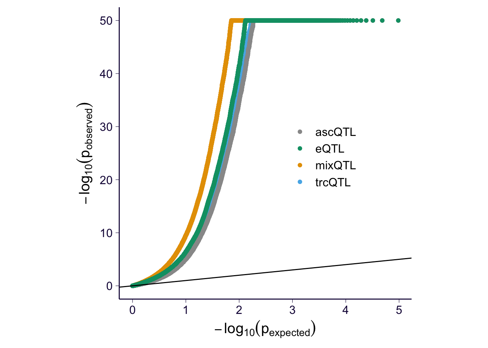
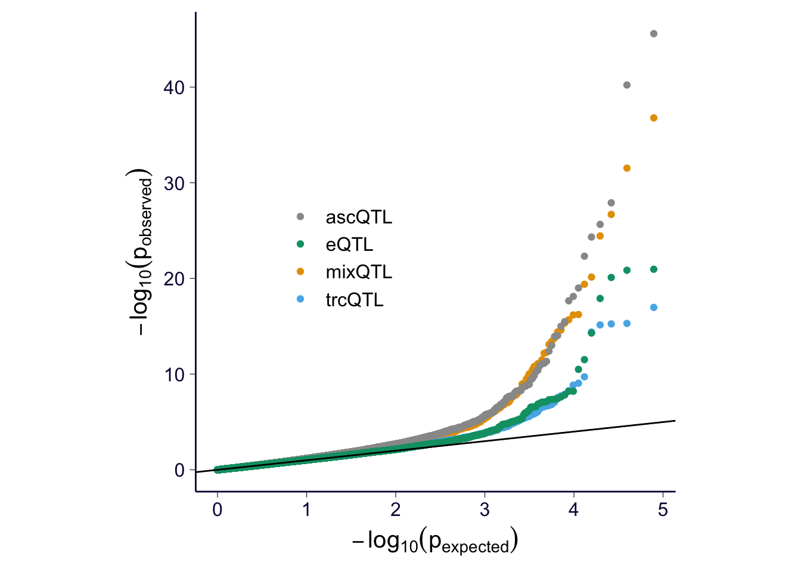
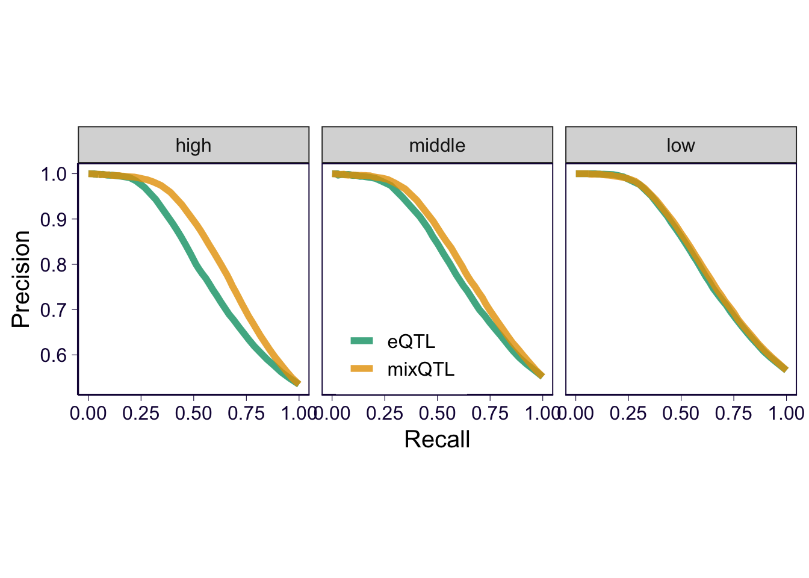

rm(list = ls())
library(SilverStandardPerformance) # for ROC/PR plotting
library(ggplot2)
theme_set(theme_bw(base_size = 12))
library(dplyr)
library(reshape2)
options(stringsAsFactors = FALSE)
source('../code/rlib_analysis.R')
datadir = '/Users/yanyul/Desktop/mixqtl-pipeline-results/postprocess-mixqtl'
cbPalette <- c('ascQTL' = "#999999", 'mixQTL' = "#E69F00", 'trcQTL' = "#56B4E9", 'eQTL' = "#009E73", "#F0E442", "#0072B2", "#D55E00", "#CC79A7")
source('https://gist.githubusercontent.com/liangyy/43912b3ecab5d10c89f9d4b2669871c9/raw/8151c6fe70e3d4ee43d9ce340ecc0eb65172e616/my_ggplot_theme.R')
th$panel.border = element_rect(colour = th$axis.line$colour)
auto_cutoff = function(score, nbin = 100) {
cutoffs = quantile(score, probs = 0:nbin/nbin)
cutoffs
# c(min(score)-1, as.numeric(cutoffs), max(score) + 1)
}fnames = list(mixQTL = c('Whole_Blood-x-result-mixqtl-IN-eqtlgen_pos.subsample100000-with-gene-qc.txt.gz', 'gene', 'variant_id', 'pval.meta'), trcQTL = c('Whole_Blood-x-result-mixqtl-IN-eqtlgen_pos.subsample100000-with-gene-qc.txt.gz', 'gene', 'variant_id', 'pval.trc'), ascQTL = c('Whole_Blood-x-result-mixqtl-IN-eqtlgen_pos.subsample100000-with-gene-qc.txt.gz', 'gene', 'variant_id', 'pval.asc'), eQTL = c('Whole_Blood.allpairs-IN-eqtlgen_pos.subsample100000-with-gene-qc.txt.gz', 'gene_id', 'variant_id', 'pval_nominal'))
df = data.frame()
for(f in names(fnames)) {
sub = read.table(paste0(datadir, '/', fnames[[f]][1]), header = T)
sub = sub[, fnames[[f]][2:4]]
colnames(sub) = c('gene', 'variant', 'pval')
sub$method = f
sub$gene = trim_dot(sub$gene)
df = rbind(df, sub)
}
df_clean = df %>% group_by(gene, variant) %>% summarize(nobs = n()) %>% filter(nobs == 4) %>% ungroup()
df = df %>% filter(paste(gene, variant) %in% paste(df_clean$gene, df_clean$variant))
# df$pval[df$method == 'metaQTL'] = df$pval[df$method == 'metaQTL']df$pval[is.na(df$pval)] = runif(sum(is.na(df$pval)))
p = my_qqplot(df$pval, df$method)
p = p + geom_abline(intercept = 0, slope = 1)
p = p + scale_color_manual(values = cbPalette) + theme(legend.position = c(0.7, 0.5), legend.title = element_blank()) + th + theme(aspect.ratio = 1) + ylab(expression(-log[10](p[observed]))) + xlab(expression(-log[10](p[expected])))
p$layers[[2]]$aes_params$size = 0.5
p
ggsave('../output/gtex-v8-pipeline-eqtl-matrix-with-gene-qc-eqtlgen-positive.png', p, height = 4, width = 4)
collector = df
for(m in c('ascQTL', 'trcQTL', 'mixQTL')) {
sub = df %>% filter(method %in% c(m, 'eQTL'))
p = my_qqplot(sub$pval, sub$method)
p$layers <- c(geom_abline(slope = 1, intercept = 0, color = 'lightgray'), p$layers)
p = p + scale_color_manual(values = cbPalette)
p = p + theme(legend.position = c(0.7, 0.5), legend.title = element_blank()) + th + theme(aspect.ratio = 1) + ylab(expression(-log[10](p[observed]))) + xlab(expression(-log[10](p[expected])))
ggsave(paste0('../output/gtex-v8-pipeline-eqtl-matrix-with-gene-qc-eqtlgen-positive-', m, '.png'), p, height = 4, width = 4)
}fnames = list(mixQTL = c('Whole_Blood-x-result-mixqtl-IN-eqtlgen_neg.subsample100000-with-gene-qc.txt.gz', 'gene', 'variant_id', 'pval.meta'), trcQTL = c('Whole_Blood-x-result-mixqtl-IN-eqtlgen_neg.subsample100000-with-gene-qc.txt.gz', 'gene', 'variant_id', 'pval.trc'), ascQTL = c('Whole_Blood-x-result-mixqtl-IN-eqtlgen_neg.subsample100000-with-gene-qc.txt.gz', 'gene', 'variant_id', 'pval.asc'), eQTL = c('Whole_Blood.allpairs-IN-eqtlgen_neg.subsample100000-with-gene-qc.txt.gz', 'gene_id', 'variant_id', 'pval_nominal'))
df = data.frame()
for(f in names(fnames)) {
sub = read.table(paste0(datadir, '/', fnames[[f]][1]), header = T)
sub = sub[, fnames[[f]][2:4]]
colnames(sub) = c('gene', 'variant', 'pval')
sub$method = f
sub$gene = trim_dot(sub$gene)
df = rbind(df, sub)
}
df_clean = df %>% group_by(gene, variant) %>% summarize(nobs = n()) %>% filter(nobs == 4) %>% ungroup()
df = df %>% filter(paste(gene, variant) %in% paste(df_clean$gene, df_clean$variant))
# df$pval[df$method == 'metaQTL'] = df$pval[df$method == 'metaQTL']df$pval[is.na(df$pval)] = runif(sum(is.na(df$pval)))
p = my_qqplot(df$pval, df$method)
p = p + geom_abline(intercept = 0, slope = 1)
p = p + scale_color_manual(values = cbPalette) + theme(legend.position = c(0.7, 0.5), legend.title = element_blank()) + th + theme(aspect.ratio = 1) + ylab(expression(-log[10](p[observed]))) + xlab(expression(-log[10](p[expected])))
p$layers[[2]]$aes_params$size = 0.5
p
collector = rbind(collector %>% mutate(type = 'positive'), df %>% mutate(type = 'negative'))ggsave('../output/gtex-v8-pipeline-eqtl-matrix-with-gene-qc-eqtlgen-negative.png', p, height = 4, width = 4)
for(m in c('ascQTL', 'trcQTL', 'mixQTL')) {
sub = df %>% filter(method %in% c(m, 'eQTL'))
p = my_qqplot(sub$pval, sub$method)
p$layers <- c(geom_abline(slope = 1, intercept = 0, color = 'lightgray'), p$layers)
p = p + scale_color_manual(values = cbPalette)
p = p + theme(legend.position = c(0.7, 0.5), legend.title = element_blank()) + th + theme(aspect.ratio = 1) + ylab(expression(-log[10](p[observed]))) + xlab(expression(-log[10](p[expected])))
ggsave(paste0('../output/gtex-v8-pipeline-eqtl-matrix-with-gene-qc-eqtlgen-negative-', m, '.png'), p, height = 4, width = 4)
}# source('https://gist.githubusercontent.com/liangyy/6d4314dbc238236731e134abef2484f4/raw/f6b23f7f06ec97c27dff574ec1712c9d1f0552df/rlib_roc_pr.R')
collector = collector %>% mutate(eqtl = paste(gene, variant))
true_eqtls = collector %>% filter(type == 'positive')
true_eqtls = unique(true_eqtls$eqtl)
mixqtl = collector %>% filter(method == 'mixQTL')
eqtl = collector %>% filter(method == 'eQTL')
cur_mix = gen_roc_curve(true_genes = true_eqtls, gene = mixqtl$eqtl, score = -log(mixqtl$pval), method = 'gt', cutoff = c(0, 1:20/10, 10:15/5, 4:50, Inf))
cur_eqtl = gen_roc_curve(true_genes = true_eqtls, gene = eqtl$eqtl, score = -log(eqtl$pval), method = 'gt', cutoff = c(0, 1:20/10, 10:15/5, 4:50, Inf))
e2 = rbind(cur_mix %>% mutate(method = 'mixQTL'), cur_eqtl %>% mutate(method = 'eQTL'))
p = e2 %>% ggplot() + geom_abline(intercept = 0, slope = 1, color = 'lightgray') + geom_path(aes(x = fpr, y = tpr, color = method), size = 2, alpha = .8) + coord_equal()
p = p + th
p = p + xlab('False positive rate') + ylab('True positive rate') + theme(legend.position = c(0.8, 0.2), legend.title = element_blank()) + scale_color_manual(values = cbPalette)
pcur_mix = gen_fdr_power_curve(true_genes = true_eqtls, gene = mixqtl$eqtl, score = -log(mixqtl$pval), method = 'gt', cutoff = c(0, 1:20/10, 10:15/5, 4:50, Inf))
cur_eqtl = gen_fdr_power_curve(true_genes = true_eqtls, gene = eqtl$eqtl, score = -log(eqtl$pval), method = 'gt', cutoff = c(0, 1:20/10, 10:15/5, 4:50, Inf))
e = rbind(cur_mix %>% mutate(method = 'mixQTL') %>% filter(recall != 0) , cur_eqtl %>% mutate(method = 'eQTL') %>% filter(recall != 0))
p2 = e %>% ggplot() + geom_path(aes(x = recall, y = precision, color = method), size = 2, alpha = .8) + theme(aspect.ratio = 1)
p2 = p2 + th
p2 = p2 + xlab('Recall') + ylab('Precision') + theme(legend.position = c(0.2, 0.2), legend.title = element_blank()) + scale_color_manual(values = cbPalette)
p2ggsave('../output/gtex-v8-pipeline-eqtl-matrix-with-gene-qc-eqtlgen-roc.png', p, width = 4, height = 4)
ggsave('../output/gtex-v8-pipeline-eqtl-matrix-with-gene-qc-eqtlgen-pr.png', p2, width = 4, height = 4)th2 = th
th2$panel.border = element_rect(colour = th2$axis.line$colour)
expression_level = read.table('/Users/yanyul/Desktop/mixqtl-pipeline-results/misc_data/gtex-v8-genes-passed-qc-with-median-trc.txt', header = T)
quantile(expression_level$median_trc, probs = 0:10/10)## 0% 10% 20% 30% 40% 50% 60% 70% 80% 90% 100%
## 181.00 506.30 738.00 1018.00 1357.10 1808.50 2447.40 3456.35 5149.10 9985.05 5893511.00thresholds = quantile(expression_level$median_trc, probs = c(1/3, 2/3))
collector = collector %>% mutate(expression_level = 'high')
collector$expression_level[collector$gene %in% expression_level$gene[expression_level$median_trc < thresholds[1]]] = 'low'
collector$expression_level[collector$gene %in% expression_level$gene[expression_level$median_trc < thresholds[2] & expression_level$median_trc >= thresholds[1]]] = 'middle'
roc_c = list()
for(i in unique(collector$expression_level)) {
sub = collector %>% filter(expression_level == i)
true_eqtls = sub %>% filter(type == 'positive')
true_eqtls = unique(true_eqtls$eqtl)
mixqtl = sub %>% filter(method == 'mixQTL')
eqtl = sub %>% filter(method == 'eQTL')
cur_mix = gen_roc_curve(true_genes = true_eqtls, gene = mixqtl$eqtl, score = -log(mixqtl$pval), method = 'gt', cutoff = c(0, 1:20/10, 10:15/5, 4:50, Inf))
cur_eqtl = gen_roc_curve(true_genes = true_eqtls, gene = eqtl$eqtl, score = -log(eqtl$pval), method = 'gt', cutoff = c(0, 1:20/10, 10:15/5, 4:50, Inf))
e = rbind(cur_mix %>% mutate(method = 'mixQTL'), cur_eqtl %>% mutate(method = 'eQTL'))
roc_c[[length(roc_c) + 1]] = e %>% mutate(expression_level = i)
}
roc_c = do.call(rbind, roc_c)
roc_c$expression_level = factor(roc_c$expression_level, levels = c('high', 'middle', 'low'))
p = roc_c %>% ggplot() + geom_abline(intercept = 0, slope = 1, color = 'lightgray') + geom_path(aes(x = fpr, y = tpr, color = method), size = 2, alpha = .8) + facet_wrap(~expression_level) + coord_equal() # + geom_point(aes(x = fpr, y = tpr))
p = p + th2
p = p + xlab('False positive rate') + ylab('True positive rate') + scale_color_manual(values = cbPalette) + theme(legend.position = 'bottom', legend.title = element_blank())
ppr_c = list()
for(i in unique(collector$expression_level)) {
sub = collector %>% filter(expression_level == i)
true_eqtls = sub %>% filter(type == 'positive')
true_eqtls = unique(true_eqtls$eqtl)
mixqtl = sub %>% filter(method == 'mixQTL')
eqtl = sub %>% filter(method == 'eQTL')
cur_mix = gen_fdr_power_curve(true_genes = true_eqtls, gene = mixqtl$eqtl, score = -log(mixqtl$pval), method = 'gt', cutoff = c(0, 1:20/10, 10:15/5, 4:50, Inf))
cur_eqtl = gen_fdr_power_curve(true_genes = true_eqtls, gene = eqtl$eqtl, score = -log(eqtl$pval), method = 'gt', cutoff = c(0, 1:20/10, 10:15/5, 4:50, Inf))
e = rbind(cur_mix %>% mutate(method = 'mixQTL') %>% filter(recall != 0) , cur_eqtl %>% mutate(method = 'eQTL') %>% filter(recall != 0))
pr_c[[length(pr_c) + 1]] = e %>% mutate(expression_level = i)
}
pr_c = do.call(rbind, pr_c)
pr_c$expression_level = factor(pr_c$expression_level, levels = c('high', 'middle', 'low'))
p2 = pr_c %>% ggplot() + geom_path(aes(x = recall, y = precision, color = method), size = 2, alpha = .8) + theme(aspect.ratio = 1) + facet_wrap(~expression_level)
p2 = p2 + th2
p2 = p2 + xlab('Recall') + ylab('Precision') + theme(legend.position = 'bottom', legend.title = element_blank()) + scale_color_manual(values = cbPalette)
p2
ggsave('../output/gtex-v8-pipeline-eqtl-matrix-with-gene-qc-eqtlgen-roc-stratified.png', p, width = 10, height = 5)
ggsave('../output/gtex-v8-pipeline-eqtl-matrix-with-gene-qc-eqtlgen-pr-stratified.png', p2, width = 10, height = 5)